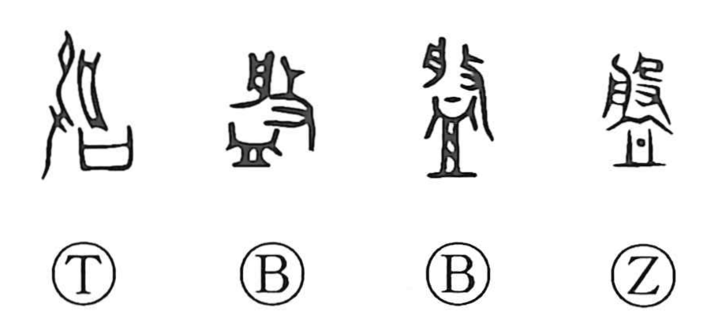

盤

Kun: | On: ban
tray ・ dish ・ bowl ・ washbasin ・ disk ・ to go around ・ to revolve
Explanation
Shirakawa takes 盤 as a picto‑phonetic character with 般 supplying the sound. In oracle-bone and tortoise-plastron forms the graph shows the act of dipping or ladling from a tub, pointing to a broad, shallow vessel; in bronze usage it denotes a metal washbasin. From this, 盤 naturally covers items like a tub or washbasin, a bowl, and a plate or dish. The phonetic 般 itself depicts striking a 舟—here understood as the 盤 used as a sound-making implement—and appears in words such as 般楽, associated with enjoyment. Because such vessels are often round, the character also extends to the sense of moving in a circle—‘to go around’ or ‘to revolve’—as seen in compounds like 盤旋.